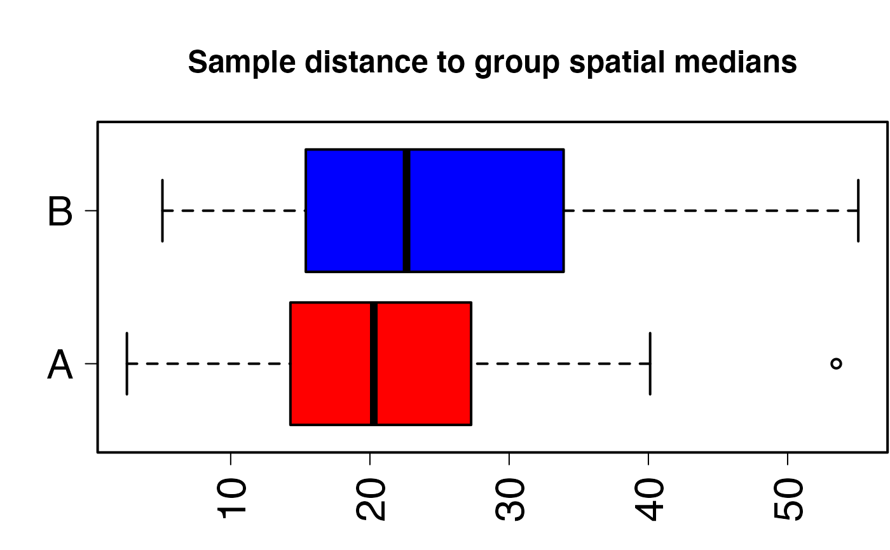

R/smart_permdisp.R
smart_permdisp.RdComputes Permutational Multivariate Analysis of Dispersion (PERMDISP) in group dispersion using multivariate data.
Variance partitioning computed on a sample-by-sample triangular matrix obtained from variable-by-sample data following Anderson (2006).
Calculates a range of inter-sample distances, similarities and dissimilarities. Includes control for genetic drift for bi-allelic genetic markers including single nucleotide polymorphisms (SNP) following Patterson, Price and Reich (2006) that can be combined with SMART Principal Component Analysis (PCA).
Optimized to run fast matrix building and permutations for big datasets in ecological, evolutionary and genomic research.
| snp_data | File name read from working directory. SNP = rows, samples = columns without row names or column headings.
SNP values must be count data (no decimals allowed).
File extension detected automatically whether text or |
|---|---|
| packed_data | Logical value for |
| sample_group | Character or numeric vector assigning samples to groups. Coerced to factor. |
| sample_remove | Logical |
| snp_remove | Logical |
| missing_value | Number |
| missing_impute | String handling missing values.
Default |
| scaling | String. Default |
| sample_distance | Type of inter-sample proximity computed (distance, similarity, dissimilarity).
Default is |
| program_distance | A string value indicating R package to estimate proximities between pairs of samples.
Default |
| target_space | String.
Default |
| pc_axes | Number of PCA axes computed always starting with PCA axis 1.
Default |
| pairwise | Logical.
Default |
| pairwise_method | String specifying type of correction for multiple testing.
Default |
| permutation_n | Number of permutations resulting in PERMDISP test p value.
Default |
| permutation_seed | Number fixing random generator of permutations.
Default |
| dispersion_type | String indicating quantification of group dispersion whether relative to spatial |
| samplesize_bias | Logical.
|
Returns a list containing the following elements:
permdisp.samplesDataframe showing sample summary.
Column Group assigns samples to tested groups.
Column Class specifies if samples were used in, or removed from, testing (PERMDISP).
Column Sample_dispersion shows dispersion of individual samples relative to spatial "median" or "centroid".
permdisp.biasString indicating if PERMDISP dispersions corrected for number of samples per group.
permdisp.group_locationDataframe showing coordinates of spatial "median" or "centroid" per group.
permdisp.global_testList showing table with degrees of freedom, sum of squares, mean sum of squares, F statistic and p value.
permdisp.pairwise_testList showing table with F statistic, p value and corrected p value per pair of groups.
Obtained only if pairwise = TRUE.
permdisp.pairwise_correctionString indicating type of correction for multiple testing.
permdisp.permutation_numberNumber of permutations applied to obtain the distribution of F statistic.
permdisp.permutation_seedNumber fixing random generator of permutations for reproducibility of results.
PERMDISP is a form of homoscedasticity test analogous to univariate Levene's (1960) and, more closely, Brown & Forsythe's (1974) tests. Applies PERMANOVA test (Anderson 2001) for differences in Euclidean dispersion among groups (Anderson 2006).
Proximity between samples can be any type of distance, similarity or dissimilarity.
Group dispersion estimated relative to group centroids (central point) or to spatial (geometric) medians (point minimizing distance to group samples) in Principal Coordinate Analysis (PCoA, Gower 1966) space.
Acronym PERMDISP originates from Marti Anderson's FORTRAN program (Anderson 2004).
Control for unequal number of samples among groups optionally done by weighting sample distance to group spatial median or centroid by sqrt(n/(n-1)) (O'Neill & Mathews 2000), and the null hypothesis then being tested changes from d_1 = d_2 = ... = d_t (balanced design) to ((n_1-1)/n_1) x d_1 = ((n_2-1)/n_2) x d_2 = ... = ((n_t-1)/n_t) x d_t (unbalanced design) where d represents dispersion of groups 1 to t, and n represents number of samples per group.
To attribute group differences to location (position of sample groups) and/or dispersion (spread of sample groups), PERMDISP must be combined with PERMANOVA as implemented through smart_permanova.
smart_permdisp uses betadisper to estimate an ANOVA F statistic and group dispersions using formula snp_eucli ~ sample_group, where snp_eucli is the sample-by-sample triangular matrix in PCoA space.
If >2 sample groups tested, pairwise = TRUE allows pairwise testing and correction for multiple testing by holm (Holm) [default], hochberg (Hochberg), hommel (Hommel), bonferroni (Bonferroni), BY (Benjamini-Yekuieli), BH (Benjamini-Hochberg) or fdr (False Discovery Rate).
For big data, Dist builds sample-by-sample triangular matrix much faster than vegdist. Dist computes proximities euclidean, manhattan, canberra1, canberra2, minimum, maximum, minkowski, bhattacharyya, hellinger, kullback_leibler and jensen_shannon. vegdist computes manhattan, euclidean, canberra, clark, bray, kulczynski, jaccard, gower, altGower, morisita, horn, mountford, raup, binomial, chao, cao and mahalanobis.
Euclidean distance required for SMARTPCA scaling.
sample_remove should include both samples removed from PCA and ancient samples projected onto PCA space (if any).
Data read from working directory with SNPs as rows and samples as columns. Two alternative formats: (1) text file of SNPs by samples (file extension and column separators recognized automatically) read using fread; or (2) duet of EIGENSTRAT files (see https://reich.hms.harvard.edu/software) using vroom_fwf, including a genotype file of SNPs by samples *.geno, and a sample file (*.ind) containing three vectors assigning individual samples to unique user-predefined groups (populations), sexes (or other user-defined descriptor) and alphanumeric identifiers. For EIGENSTRAT, vector sample_group assigns samples to groups retrievable from column 3 of file *.ind.
SNPs with zero variance removed prior to SVD to optimize computation time and avoid undefined values if scaling = "sd" or "drift".
Users can select subsets of samples or SNPs by introducing a vector including column numbers for samples (sample_remove) and/or row numbers for SNPs (snp_remove) to be removed from computations.
Function stops if the final number of SNPs is 1 or 2.
EIGENSOFT was conceived for the analysis of human genes and its SMARTPCA suite so accepts 22 (autosomal) chromosomes by default.
If >22 chromosomes are provided and the internal parameter numchrom is not set to the target number chromosomes of interest, SMARTPCA automatically subsets chromosomes 1 to 22.
In contrast, smart_permdisp accepts any number of autosomes with or without the sex chromosomes from an EIGENSTRAT file.
Anderson, M. J. (2001) A new method for non-parametric multivariate analysis of variance. Austral Ecology, 26, 32-46.
Anderson, M. J. (2004). PERMANOVA_2factor: a FORTRAN computer program for permutational multivariate analysis of variance (for any two-factor ANOVA design) using permutation tests (Department of Statistics, University of Auckland, New Zealand).
Anderson, M. J. & D. C. I. Walsh (2013) PERMANOVA, ANOSIM, and the Mantel test in the face of heterogeneous dispersions: What null hypothesis are you testing? Ecological Monographs, 83, 557-574.
Gower, J. C. (1966) Some distance properties of latent root and vector methods used in multivariate analysis. Biometrika, 53, 325-338.
McArdle, B. H. & M. J. Anderson (2001) Fitting multivariate models to community data: a comment on distance-based redundancy analysis. Ecology, 82, 290-297.
Patterson, N., A. L. Price and D. Reich (2006) Population structure and eigenanalysis. PLoS Genetics, 2, e190.
Warton, D. I., S. T. Wright and Y. Wang (2012) Distance-based multivariate analyses confound location and dispersion effects. Methods in Ecology and Evolution, 3, 89-101.
adonis (package vegan),
Dist (package Rfast),
fread (package data.table),
vegdist (package vegan),
vroom_fwf (package vroom)
# Path to example genotype matrix "dataSNP" pathToGenoFile = system.file("extdata", "dataSNP", package = "smartsnp") # Assign 50 samples to each of two groups and colours my_groups <- as.factor(c(rep("A", 50), rep("B", 50))); cols = c("red", "blue") # Run PERMDISP permdispR <- smart_permdisp(snp_data = pathToGenoFile, sample_group = my_groups)#>#>#>#>#>#>#>#>#>#>#>#>#>#>#>#>#>#>#>#>#>#>#>#>#>#>#>#>#>#># Extract summary table assigning samples to groups and dispersion of individual samples permdispR$permdisp.samples#> Group Class Sample_dispersion #> 1 A PERMDISP 161.4757 #> 2 A PERMDISP 160.9709 #> 3 A PERMDISP 161.2118 #> 4 A PERMDISP 160.3491 #> 5 A PERMDISP 160.4445 #> 6 A PERMDISP 162.2998 #> 7 A PERMDISP 160.9662 #> 8 A PERMDISP 160.9234 #> 9 A PERMDISP 161.4040 #> 10 A PERMDISP 161.1902 #> 11 A PERMDISP 160.2838 #> 12 A PERMDISP 161.0910 #> 13 A PERMDISP 160.0616 #> 14 A PERMDISP 161.9953 #> 15 A PERMDISP 161.5489 #> 16 A PERMDISP 160.8466 #> 17 A PERMDISP 162.0203 #> 18 A PERMDISP 161.0723 #> 19 A PERMDISP 160.9892 #> 20 A PERMDISP 161.2393 #> 21 A PERMDISP 160.8561 #> 22 A PERMDISP 160.8314 #> 23 A PERMDISP 162.2363 #> 24 A PERMDISP 160.9487 #> 25 A PERMDISP 161.7043 #> 26 A PERMDISP 160.0128 #> 27 A PERMDISP 161.8192 #> 28 A PERMDISP 160.7234 #> 29 A PERMDISP 160.9490 #> 30 A PERMDISP 160.7225 #> 31 A PERMDISP 161.0558 #> 32 A PERMDISP 160.7245 #> 33 A PERMDISP 161.1502 #> 34 A PERMDISP 159.9254 #> 35 A PERMDISP 161.1662 #> 36 A PERMDISP 161.3988 #> 37 A PERMDISP 161.6969 #> 38 A PERMDISP 160.5360 #> 39 A PERMDISP 161.5771 #> 40 A PERMDISP 161.1907 #> 41 A PERMDISP 161.8498 #> 42 A PERMDISP 161.7793 #> 43 A PERMDISP 161.9005 #> 44 A PERMDISP 161.7850 #> 45 A PERMDISP 161.7027 #> 46 A PERMDISP 161.9930 #> 47 A PERMDISP 162.2773 #> 48 A PERMDISP 160.8876 #> 49 A PERMDISP 161.3201 #> 50 A PERMDISP 162.0835 #> 51 B PERMDISP 161.9058 #> 52 B PERMDISP 161.5106 #> 53 B PERMDISP 160.9970 #> 54 B PERMDISP 160.9550 #> 55 B PERMDISP 160.9942 #> 56 B PERMDISP 162.4287 #> 57 B PERMDISP 161.0528 #> 58 B PERMDISP 161.0653 #> 59 B PERMDISP 160.5475 #> 60 B PERMDISP 161.4787 #> 61 B PERMDISP 161.8445 #> 62 B PERMDISP 161.1317 #> 63 B PERMDISP 161.3229 #> 64 B PERMDISP 162.3351 #> 65 B PERMDISP 160.9433 #> 66 B PERMDISP 161.8845 #> 67 B PERMDISP 160.6879 #> 68 B PERMDISP 160.8744 #> 69 B PERMDISP 163.0843 #> 70 B PERMDISP 160.7723 #> 71 B PERMDISP 160.9731 #> 72 B PERMDISP 161.2441 #> 73 B PERMDISP 162.3827 #> 74 B PERMDISP 161.2757 #> 75 B PERMDISP 161.6916 #> 76 B PERMDISP 161.3637 #> 77 B PERMDISP 160.7243 #> 78 B PERMDISP 162.8925 #> 79 B PERMDISP 160.8015 #> 80 B PERMDISP 161.7590 #> 81 B PERMDISP 161.8004 #> 82 B PERMDISP 161.1778 #> 83 B PERMDISP 161.3634 #> 84 B PERMDISP 161.4223 #> 85 B PERMDISP 162.5199 #> 86 B PERMDISP 161.3039 #> 87 B PERMDISP 161.4728 #> 88 B PERMDISP 160.7768 #> 89 B PERMDISP 161.7114 #> 90 B PERMDISP 162.3565 #> 91 B PERMDISP 161.3105 #> 92 B PERMDISP 161.0042 #> 93 B PERMDISP 161.4582 #> 94 B PERMDISP 161.9629 #> 95 B PERMDISP 161.2433 #> 96 B PERMDISP 161.8619 #> 97 B PERMDISP 160.9686 #> 98 B PERMDISP 161.7675 #> 99 B PERMDISP 161.2074 #> 100 B PERMDISP 160.5961# Extract PERMDISP table permdispR$permdisp.global_test#> Df Sum Sq Mean Sq F Pr(>F) #> Groups 1 1.214908 1.2149079 3.387661 0.0642 #> Residuals 98 35.145482 0.3586274 NA NA# Plot sample distances to group central medians #run pca with truncated SVD (PCA 1 x PCA 2) pcaR1 <- smart_pca(snp_data = pathToGenoFile, sample_group = my_groups)#>#>#>#>#>#>#>#>#>#>#>#>#>#>#>#>#>#>#>#>#>#>#>#>#>#>#>#>#>#>#>#>#compute Euclidean inter-sample distances in PCA space (triangular matrix) snp_eucli <- vegan::vegdist(pcaR1$pca.sample_coordinates[,c("PC1","PC2")], method = "euclidean") #calculate spatial medians disMed <- vegan::betadisper(d = snp_eucli, group = my_groups); disMed#> #> Homogeneity of multivariate dispersions #> #> Call: vegan::betadisper(d = snp_eucli, group = my_groups) #> #> No. of Positive Eigenvalues: 2 #> No. of Negative Eigenvalues: 0 #> #> Average distance to median: #> A B #> 21.38 23.66 #> #> Eigenvalues for PCoA axes: #> PCoA1 PCoA2 #> 31798 31460#plot oldpar <- par(mar = c(4, 4, 5, 0.1), lwd = 2) boxplot(disMed, las =2, cex.axis = 2, cex.main = 1.5, horizontal = TRUE, varwidth = TRUE, col = cols, xlab = "", ylab = "", main = "Sample distance to group spatial medians")